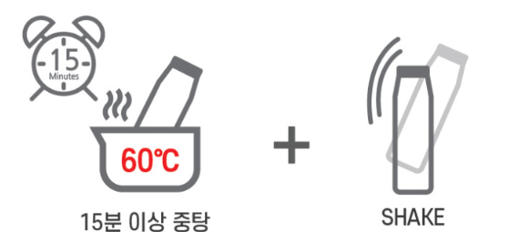

[ 초코쉘 입고시 사용법 ]
60℃ 온도의 뜨거운 물에 15분 이상 중탕 후
코팅 초콜릿이 녹으면 흔들어서 사용해주세요.

[ 보관및사용법 ]
커피머신 위에 올려놓고 사용 (따뜻한 곳)
자주 묻는 질문 Q&A
Q1. 초코쉘이 액체 상태로 입고됐는데 바로 사용해도 되나요?
A. 첫 사용 전 반드시 60℃ 물에 15분 이상 중탕 → 뚜껑 닫고 충분히 흔들어 사용합니다. (냉각 시 오일만 먼저 나올 수 있어요)
Q2. 병 입구에 하얗게 굳은 부분이 보여요. 곰팡이인가요?
A. 낮은 온도에서 코코넛오일이 초코와 분리되어 하얗게 굳는 자연스러운 현상입니다.
Q3. 초코쉘은 어디에 보관하나요?
A. 영업 중에는 커피머신 위 등 따뜻한 곳, 마감 후에는 뚜껑 닫고 실온 보관합니다.
Q4. 사용하던 초코쉘이 딱딱하게 굳어 나오지 않아요. 어떻게 하나요?
A. 60℃ 물에 15분 이상 다시 중탕 → 안쪽까지 녹으면 충분히 흔들어 사용합니다.
Q5. 초코쉘 한 통을 다 쓰기 전에 굳어서 사용이 어려워요.
A. 완전히 중탕해 흔든 뒤 소스통에 소분해 사용하고, 남은 제품은 냉장보관합니다. 개봉 시 개봉일자, 소분일자를 표기합니다.
Q6. 왁뿌 찹쌀떡에는 어떻게 코팅하나요?
A. 차가운 찹쌀떡 윗면 중앙에 뿌려 옆면까지 고르게 덮고 (밀면 X), 초코가 굳으면 제공합니다.